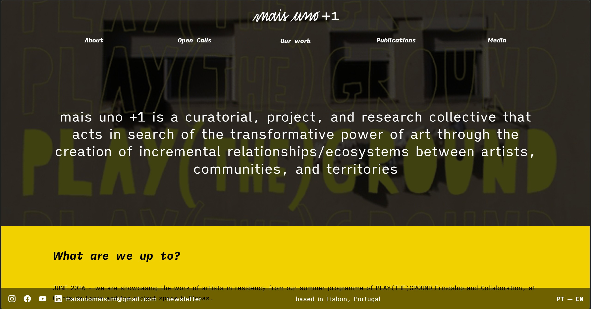
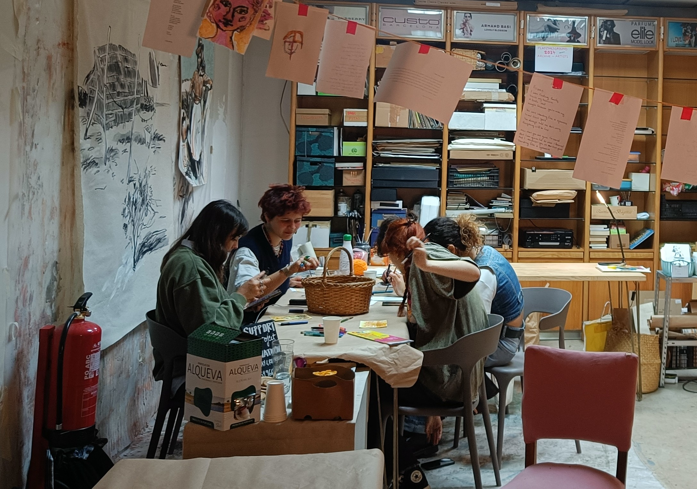
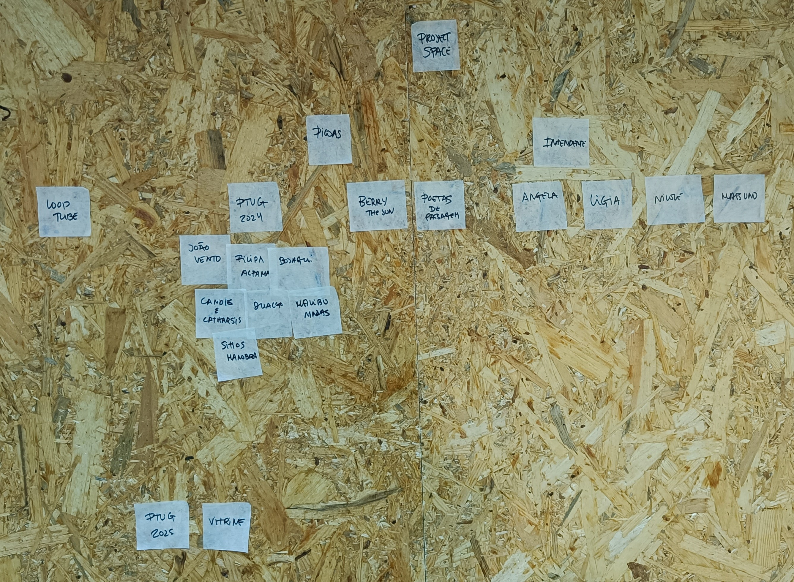
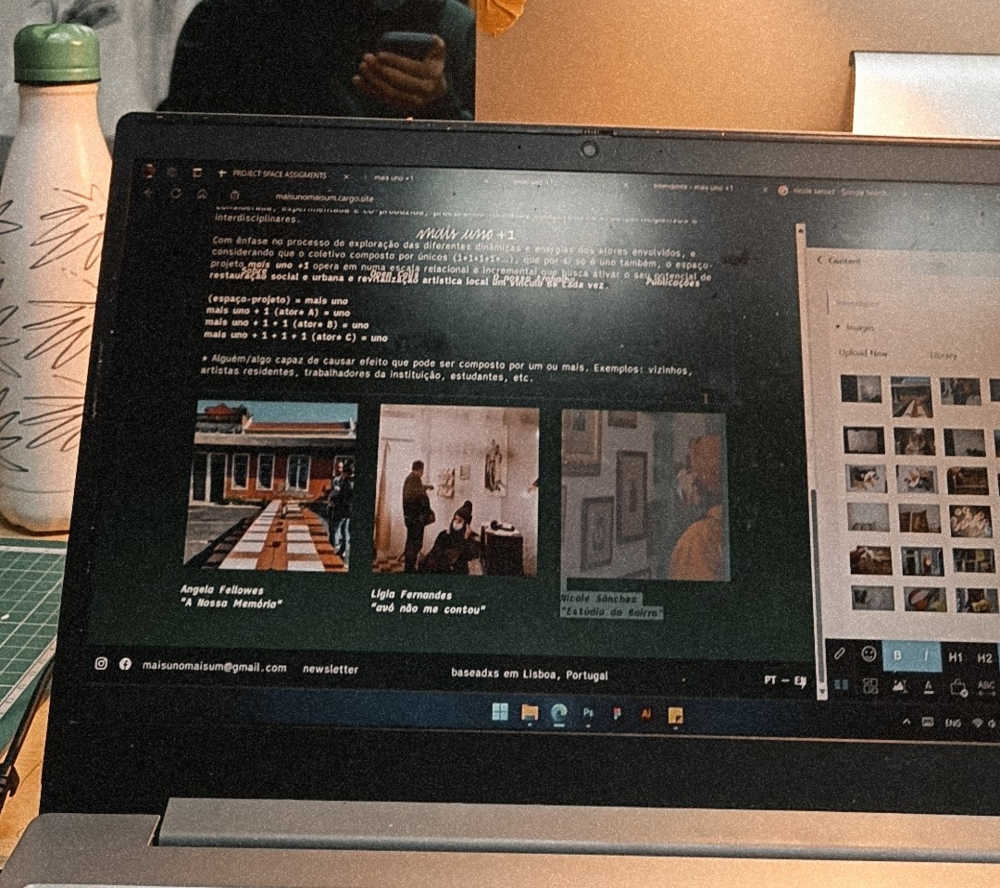
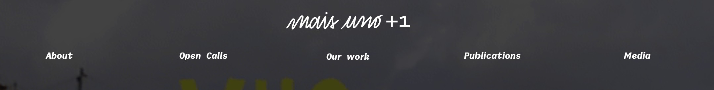
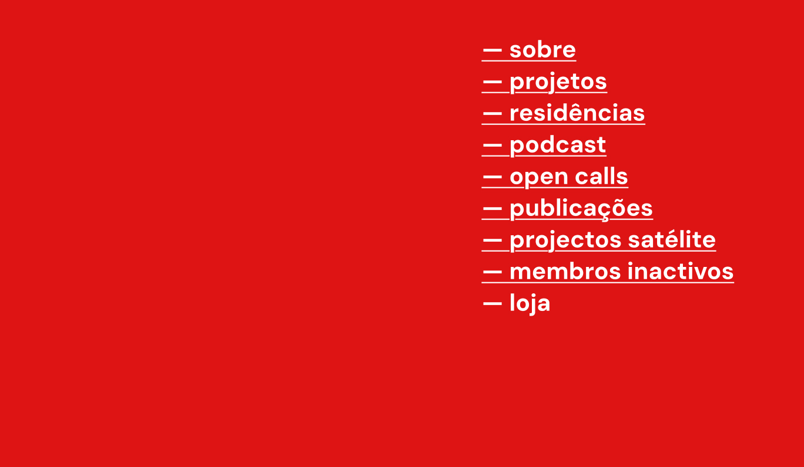
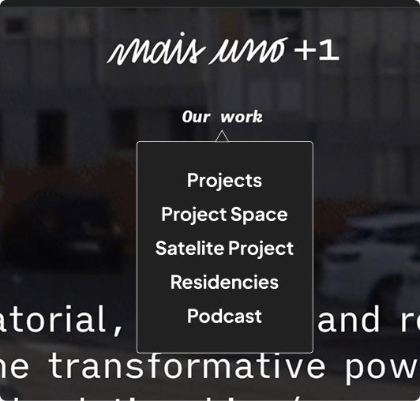
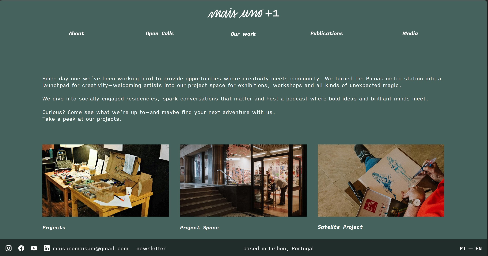
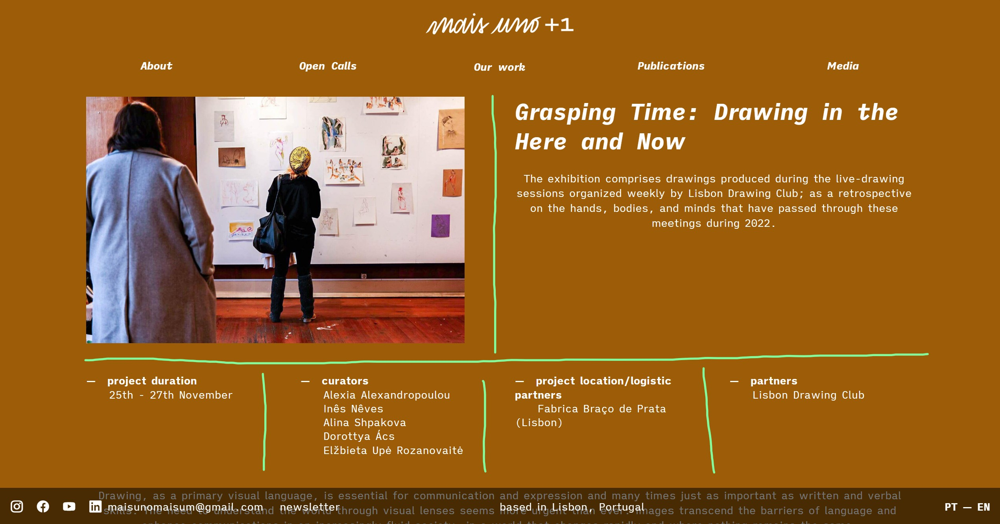

About
MaisUno+1 is a curatorial non-profit collective that specializes in helping artists show off their work. As their website is their primary source of engagement, it was necessary to provide the best experience possible with organized information in a clear structure that speaks flawlessly on its own. MaisUno has a wide variety of projects, publications and media all focused on making art accessible to all no matter the background, knowledge or status. That’s why their re-designed website features an organized catalog of their work split up in sections so that it is both usable and artistic, a value that is the core of the collective’s moto.
Organizing information
During the time I was working with MaisUno+1 my main task was to make sure the website was updated with all the completed projects. The biggest challenge in this project was to organize the enormous amount of information available on the website about the collective’s projects. Together with interns from other fields, we gathered all the available material and synthesized descriptions, the real work for me began. Started with notes on the wall, we added more and more, moved them around until we found a first draft of what the architecture would look like. Me and Nicole, the manager, thought about the process of the way would implement them into the website for an effective navigation and general user experience. Finally, after many iterations we got the final layout that would consist of 5 categories and that would affect the whole navigation of the website.
1. Gathered information on the completed projects
2. Split them by time, location, duration and type
3. Realized there are more things to include than projects alone.
Organized them by media
4. Refined information architecture

Designing and testing again and again

Organizing information starts from sticky notes on the wall
The Cargo Platform
“Cargo is a site builder for designers and artists”
- cargo.site
MaisUno+1’s website was already built in Cargo, a website builder for those who care about the visuals, not just the information. This was a huge plus when it comes to the site’s character as it aids promoting the visual information over text. Cargo had a fast learning curve overall as it differed from other website builders like Wix or Weebly as it had far less features and capabilities that ultimately made the design easier and reduced clutter by not including parts that portfolio creators would find redundant (such as setting up payment methods).

Navigation

New navigation menu

Old navigation menu
Chagning the type
The old navigation system did not manage information well. There was no importance hierarchy and some options did not even work (loja - store). Visually, a vertical menu was original but it failed to blend it with the other information of the website as it had the same optical value as other elements on the page.
Dropdown menus
A tested design we tried to implement was dropdowns in the main navigation categories. It is a simple but effective way for the user to glimpse what they will see inside this category if they will decide to click it or not. From a UX perspective, this was the perfect solution but production-wise this was not possible as Cargo didn’t have the option to create dropdowns of any kind. Despite that, we decided to hardcode a menu in to the page’s HTML, just to try its effectiveness. We were very pleased with the result but this solution had a major issue: It wasn’t scalable and maintainable. If the main designer (in this case, me) left the collective, it would be very difficult to make changes to the code without breaking the whole webpage.

Category pages
Breaking away from dropdowns, we had to find a way to display information in categories. That’s why the next approach was creating a transitioning page inside each category in the top bar that would split the title into sub-categories. This in-between page let us dive in deeper with images and text, providing a brief introduction to each general category.

Layout
Every project page follows the same information hierarchy with the same layout. This ensures the user is familiar with where to find the information they need. It is organized into categories based on each project’s needs such as duration, curators, location and partners. After some design concepts we came into conclusion that 4 is the sweet number of columns (for desktop - horizontal screens) for the information to have enough space to be readable. Also, this number ensures the user is not overwhelmed with information on the same page and can read everything without getting confused or lost.
